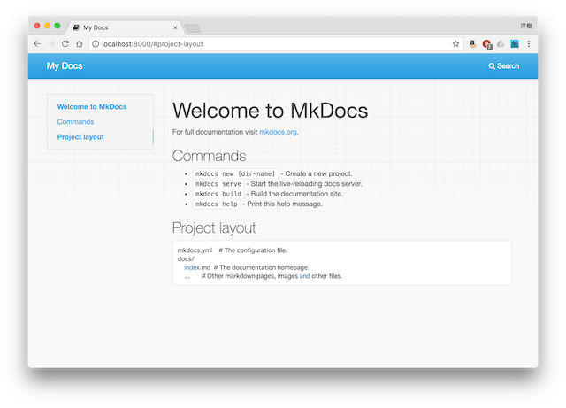

OSTree などのサイトで使われている
markdown ベースのホームページ作成？ツール を使う。
環境
MacBook Pro
プロセッサ 2.6GHz Intel Core i5(64bit)
macOS High Sierra バージョン 10.13.3
MkDocs
http://www.mkdocs.org/
MkDocsは、プロジェクトのドキュメンテーションを構築するのに役立つ、高速でシンプルですばらしく豪華な静的サイト生成プログラムです。 ドキュメントソースファイルはMarkdownで書かれ、単一のYAML設定ファイルで設定されます。
Installation
python と pip をインストールする。
Python/Download から最新バージョンの Python を mac にインストール。
Python 2 >=2.7.9 or Python 3 >=3.4 であれば、pip も一緒にインストールされるらしい。
今回は、Mac OS X 64-bit/32-bit installerのインストーラから Python 1.7.14 をインストール。
ターミナル開いている場合、一度exitで抜けてから、再度ターミナルにログイン
$ python --version
Python 2.7.14
$ pip --version
pip 9.0.1 from /Library/Frameworks/Python.framework/Versions/2.7/lib/python2.7/site-packages (python 2.7)
MkDocs をインストール
$ pip install mkdocs
$ mkdocs --version
mkdocs, version 0.17.2
Getting Started
$ mkdocs new my-project
$ tree
.
└── my-project
├── docs
│ └── index.md
└── mkdocs.yml
$ cd my-project/
$ mkdocs serve
INFO - Building documentation...
INFO - Cleaning site directory
[I 180214 23:31:13 server:283] Serving on http://127.0.0.1:8000
[I 180214 23:31:13 handlers:60] Start watching changes
[I 180214 23:31:13 handlers:62] Start detecting changes

GitHubにDeploy
http://www.mkdocs.org/user-guide/deploying-your-docs/
$ cd my-project/
$ echo "site/" >> .gitignore
$ git init
$ git add .gitignore
$ git add *
$ git commit -m "init"
Github で 新しいリポジトリ作成
例) https://github.com/greenwell0912/mkdocs
$ git remote add origin git@github.com:greenwell0912/mkdocs.git
$ git push -u origin master
$ mkdocs build # 変更する事にbuild必要 -> site/ が更新される
$ mkdocs gh-deploy
[snip]
INFO - Your documentation should shortly be available at: https://greenwell0912.github.io/mkdocs/
https://greenwell0912.github.io/mkdocs/ にアクセスすると表示される